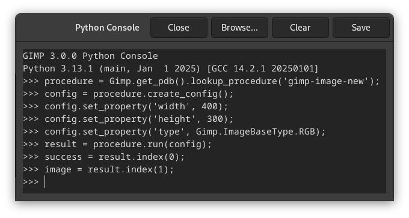

Por padrão este submenu apenas contém o console Python-Fu.
Python-Fu é um conjunto de módulos Python que funcionam como um conteúdo adicional para libgimp, permitindo a escrita de plug-ins para o GIMP.
O console de Python-Fu é uma janela de diálogo executando um “shell Python” (um interpretador Python no modo interativo). Este console está configurado para fazer uso interno de rotinas da biblioteca libgimp do GIMP.
Você pode usar o console Python-Fu para testar e executar comandos de Python interativamente.
O console consiste em uma grande janela principal de rolagem para entrada e saída, onde você pode digitar comandos Python. Quando você digita um comando Python e, em seguida, pressiona a tecla Enter, o comando é executado pelo interpretador Python. A saída do comando, bem como seu valor de retorno (e sua mensagem de erro, se houver) será exibida na janela principal.
Os Botões do Console Python-Fu
- Salvar
-
Este comando permite que você salve o conteúdo da janela principal, que é a entrada e a saída do console Python-Fu (incluindo o prompt “
>>>”). O conteúdo da janela é salvo num arquivo de texto que você pode usar para referências futuras, inclusive copiar trechos do mesmo para montar seus próprios plug-ins em Python. Note no entanto que não nenhuma opção para carregar a saída do console salva desta maneira, nem muita utilidade para isso, já que as respostas dos comandos ficam misturadas com os comandos digitados. - Limpar
-
When you click on this button, the content of the main window will be removed. Note that you can't get back the removed content using the Save command.
- Procurar
-
When clicked, the procedure browser pops up, with an additional button .
Quando você pressiona esta botão no navegador de procedimento, uma chamada para o procedimento selecionado será colado na janela do console como um comando Python:

Procedimento PDB aplicado
Agora você só tem que substituir os nomes dos parâmetros (aqui: “largura”, “altura”, e “tipo”) com valores reais, por exemplo,
config.set_property('width', 400)config.set_property('height', 300)config.set_property('type', Gimp.ImageBaseType.RGB)Então pressione Enter para executar o comando.
You can (and should!) use the constants you find in the description of the procedure's parameters, for example “RGB-IMAGE” or “OVERLAY-MODE”. But note that you have to replace hyphens (“-”) with underscores (“_”):
RGB_IMAGE,OVERLAY_MODE.![[Dica]](images/tip.png)
Dica O Python-Fu não se limita a apenas a chamar procedimentos do PDB (banco de dados de procedural do GIMP ). Você tem acesso completo à linguagem Python, que é uma linguagem de uso geral, podendo ser usada para interagir com vários elementos no seu computador, como arquivos e até bancos de dados e serviços de rede. Há também outros objetos no módulo GIMP além do PDB, por exemplo, para criar um novo objeto de imagem, como no exemplo acima, você também pode digitar
image = gimp.Image(width, height, type)(com os valores atuais para “largura”, “altura”, e “tipo”).
- Fechar
-
Ao pressionar este botão fecha, o console é fechado.